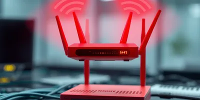

Introducción
¿Tu Wi-Fi se corta en ciertas habitaciones? No necesitas un nuevo router ni pagar más por internet. En este artículo te muestro
técnicas reales que puedes aplicar hoy mismo para mejorar la cobertura de tu red Wi-Fi.
1. Coloca el router en el centro de la casa
La ubicación del router es clave. Si está en una esquina, la señal tendrá que atravesar muchas paredes. Idealmente, colócalo:
- En el centro físico de tu hogar
- A media altura (no en el suelo ni detrás de muebles)
- Lejos de microondas, teléfonos inalámbricos y otros dispositivos que interfieran
2. Cambia el canal del Wi-Fi
Si vives en un edificio o zona con muchos vecinos, probablemente estén usando el mismo canal de Wi-Fi que tú. Esto causa congestión.
Puedes usar apps como
Wi-Fi Analyzer (Android) o
iStumbler (Mac) para ver qué canales están más libres.
Conclusión
Mejorar tu Wi-Fi no siempre requiere dinero. A veces solo necesitas
ajustes inteligentes. Prueba estos consejos uno por uno y notarás la diferencia. agustin lugo